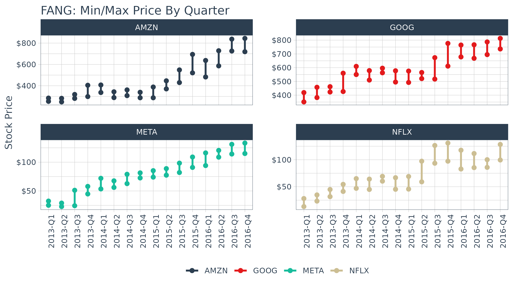

R Quantitative Analysis Package Integrations in tidyquant
Matt Dancho
2025-04-01
Source:vignettes/TQ02-quant-integrations-in-tidyquant.Rmd
TQ02-quant-integrations-in-tidyquant.RmdFunctions that leverage the quantitative analysis functionality of
xts,zoo,quantmod,TTR, andPerformanceAnalytics
Overview
There’s a wide range of useful quantitative analysis functions that
work with time-series objects. The problem is that many of these
wonderful functions don’t work with data frames or the
tidyverse workflow. That is until now! The
tidyquant package integrates the most useful functions from
the xts, zoo, quantmod,
TTR, and PerformanceAnalytics packages. This
vignette focuses on the following core functions to demonstrate
how the integration works with the quantitative finance packages:
- Transmute,
tq_transmute(): Returns a new tidy data frame typically in a different periodicity than the input. - Mutate,
tq_mutate(): Adds columns to the existing tidy data frame.
Refer to Performance
Analysis with tidyquant for a full discussion on performance
analysis and portfolio attribution with tidyquant.
1.0 Function Compatibility
tq_transmute_fun_options() returns a list the
compatible mutate functions by each package. We’ll
discuss these options by package briefly.
## List of 5
## $ zoo : chr [1:14] "rollapply" "rollapplyr" "rollmax" "rollmax.default" ...
## $ xts : chr [1:27] "apply.daily" "apply.monthly" "apply.quarterly" "apply.weekly" ...
## $ quantmod : chr [1:25] "allReturns" "annualReturn" "ClCl" "dailyReturn" ...
## $ TTR : chr [1:64] "adjRatios" "ADX" "ALMA" "aroon" ...
## $ PerformanceAnalytics: chr [1:7] "Return.annualized" "Return.annualized.excess" "Return.clean" "Return.cumulative" ...zoo Functionality
# Get zoo functions that work with tq_transmute and tq_mutate
tq_transmute_fun_options()$zoo## [1] "rollapply" "rollapplyr" "rollmax"
## [4] "rollmax.default" "rollmaxr" "rollmean"
## [7] "rollmean.default" "rollmeanr" "rollmedian"
## [10] "rollmedian.default" "rollmedianr" "rollsum"
## [13] "rollsum.default" "rollsumr"The zoo functions that are compatible are listed above.
Generally speaking, these are the:
- Roll Apply Functions:
- A generic function for applying a function to rolling margins.
- Form:
rollapply(data, width, FUN, ..., by = 1, by.column = TRUE, fill = if (na.pad) NA, na.pad = FALSE, partial = FALSE, align = c("center", "left", "right"), coredata = TRUE). - Options include
rollmax,rollmean,rollmedian,rollsum, etc.
xts Functionality
# Get xts functions that work with tq_transmute and tq_mutate
tq_transmute_fun_options()$xts## [1] "apply.daily" "apply.monthly" "apply.quarterly" "apply.weekly"
## [5] "apply.yearly" "diff.xts" "lag.xts" "period.apply"
## [9] "period.max" "period.min" "period.prod" "period.sum"
## [13] "periodicity" "to.daily" "to.hourly" "to.minutes"
## [17] "to.minutes10" "to.minutes15" "to.minutes3" "to.minutes30"
## [21] "to.minutes5" "to.monthly" "to.period" "to.quarterly"
## [25] "to.weekly" "to.yearly" "to_period"The xts functions that are compatible are listed above.
Generally speaking, these are the:
- Period Apply Functions:
- Apply a function to a time segment (e.g.
max,min,mean, etc). - Form:
apply.daily(x, FUN, ...). - Options include
apply.daily,weekly,monthly,quarterly,yearly.
- Apply a function to a time segment (e.g.
- To-Period Functions:
- Convert a time series to time series of lower periodicity (e.g. convert daily to monthly periodicity).
- Form:
to.period(x, period = 'months', k = 1, indexAt, name = NULL, OHLC = TRUE, ...). - Options include
to.minutes,hourly,daily,weekly,monthly,quarterly,yearly. -
Note 1 (Important): The return structure is
different for
to.periodand theto.monthly(to.weekly,to.quarterly, etc) forms.to.periodreturns a date, whileto.monthsreturns a character MON YYYY. Best to useto.periodif you want to work with time-series vialubridate.
quantmod Functionality
# Get quantmod functions that work with tq_transmute and tq_mutate
tq_transmute_fun_options()$quantmod## [1] "allReturns" "annualReturn" "ClCl" "dailyReturn"
## [5] "Delt" "HiCl" "Lag" "LoCl"
## [9] "LoHi" "monthlyReturn" "Next" "OpCl"
## [13] "OpHi" "OpLo" "OpOp" "periodReturn"
## [17] "quarterlyReturn" "seriesAccel" "seriesDecel" "seriesDecr"
## [21] "seriesHi" "seriesIncr" "seriesLo" "weeklyReturn"
## [25] "yearlyReturn"The quantmod functions that are compatible are listed
above. Generally speaking, these are the:
- Percentage Change (Delt) and Lag Functions
- Delt:
Delt(x1, x2 = NULL, k = 0, type = c("arithmetic", "log"))- Variations of Delt: ClCl, HiCl, LoCl, LoHi, OpCl, OpHi, OpLo, OpOp
- Form:
OpCl(OHLC)
- Lag:
Lag(x, k = 1)/ Next:Next(x, k = 1)(Can also usedplyr::laganddplyr::lead)
- Delt:
- Period Return Functions:
- Get the arithmetic or logarithmic returns for various periodicity, which include daily, weekly, monthly, quarterly, and yearly.
- Form:
periodReturn(x, period = 'monthly', subset = NULL, type = 'arithmetic', leading = TRUE, ...)
- Series Functions:
- Return values that describe the series. Options include describing the increases/decreases, acceleration/deceleration, and hi/low.
- Forms:
seriesHi(x),seriesIncr(x, thresh = 0, diff. = 1L),seriesAccel(x)
TTR Functionality
# Get TTR functions that work with tq_transmute and tq_mutate
tq_transmute_fun_options()$TTR## [1] "adjRatios" "ADX" "ALMA"
## [4] "aroon" "ATR" "BBands"
## [7] "CCI" "chaikinAD" "chaikinVolatility"
## [10] "CLV" "CMF" "CMO"
## [13] "CTI" "DEMA" "DonchianChannel"
## [16] "DPO" "DVI" "EMA"
## [19] "EMV" "EVWMA" "GMMA"
## [22] "growth" "HMA" "keltnerChannels"
## [25] "KST" "lags" "MACD"
## [28] "MFI" "momentum" "OBV"
## [31] "PBands" "ROC" "rollSFM"
## [34] "RSI" "runCor" "runCov"
## [37] "runMAD" "runMax" "runMean"
## [40] "runMedian" "runMin" "runPercentRank"
## [43] "runSD" "runSum" "runVar"
## [46] "SAR" "SMA" "SMI"
## [49] "SNR" "stoch" "TDI"
## [52] "TRIX" "ultimateOscillator" "VHF"
## [55] "VMA" "volatility" "VWAP"
## [58] "VWMA" "wilderSum" "williamsAD"
## [61] "WMA" "WPR" "ZigZag"
## [64] "ZLEMA"Here’ a brief description of the most popular functions from
TTR:
- Welles Wilder’s Directional Movement Index:
ADX(HLC, n = 14, maType, ...)
- Bollinger Bands:
-
BBands(HLC, n = 20, maType, sd = 2, ...): Bollinger Bands
-
- Rate of Change / Momentum:
-
ROC(x, n = 1, type = c("continuous", "discrete"), na.pad = TRUE): Rate of Change -
momentum(x, n = 1, na.pad = TRUE): Momentum
-
- Moving Averages (maType):
-
SMA(x, n = 10, ...): Simple Moving Average -
EMA(x, n = 10, wilder = FALSE, ratio = NULL, ...): Exponential Moving Average -
DEMA(x, n = 10, v = 1, wilder = FALSE, ratio = NULL): Double Exponential Moving Average -
WMA(x, n = 10, wts = 1:n, ...): Weighted Moving Average -
EVWMA(price, volume, n = 10, ...): Elastic, Volume-Weighted Moving Average -
ZLEMA(x, n = 10, ratio = NULL, ...): Zero Lag Exponential Moving Average -
VWAP(price, volume, n = 10, ...): Volume-Weighted Moving Average Price -
VMA(x, w, ratio = 1, ...): Variable-Length Moving Average -
HMA(x, n = 20, ...): Hull Moving Average -
ALMA(x, n = 9, offset = 0.85, sigma = 6, ...): Arnaud Legoux Moving Average
-
- MACD Oscillator:
MACD(x, nFast = 12, nSlow = 26, nSig = 9, maType, percent = TRUE, ...)
- Relative Strength Index:
RSI(price, n = 14, maType, ...)
- runFun:
-
runSum(x, n = 10, cumulative = FALSE): returns sums over a n-period moving window. -
runMin(x, n = 10, cumulative = FALSE): returns minimums over a n-period moving window. -
runMax(x, n = 10, cumulative = FALSE): returns maximums over a n-period moving window. -
runMean(x, n = 10, cumulative = FALSE): returns means over a n-period moving window. -
runMedian(x, n = 10, non.unique = "mean", cumulative = FALSE): returns medians over a n-period moving window. -
runCov(x, y, n = 10, use = "all.obs", sample = TRUE, cumulative = FALSE): returns covariances over a n-period moving window. -
runCor(x, y, n = 10, use = "all.obs", sample = TRUE, cumulative = FALSE): returns correlations over a n-period moving window. -
runVar(x, y = NULL, n = 10, sample = TRUE, cumulative = FALSE): returns variances over a n-period moving window. -
runSD(x, n = 10, sample = TRUE, cumulative = FALSE): returns standard deviations over a n-period moving window. -
runMAD(x, n = 10, center = NULL, stat = "median", constant = 1.4826, non.unique = "mean", cumulative = FALSE): returns median/mean absolute deviations over a n-period moving window. -
wilderSum(x, n = 10): returns a Welles Wilder style weighted sum over a n-period moving window.
-
- Stochastic Oscillator / Stochastic Momentum Index:
-
stoch(HLC, nFastK = 14, nFastD = 3, nSlowD = 3, maType, bounded = TRUE, smooth = 1, ...): Stochastic Oscillator -
SMI(HLC, n = 13, nFast = 2, nSlow = 25, nSig = 9, maType, bounded = TRUE, ...): Stochastic Momentum Index
-
PerformanceAnalytics Functionality
# Get PerformanceAnalytics functions that work with tq_transmute and tq_mutate
tq_transmute_fun_options()$PerformanceAnalytics## [1] "Return.annualized" "Return.annualized.excess"
## [3] "Return.clean" "Return.cumulative"
## [5] "Return.excess" "Return.Geltner"
## [7] "zerofill"The PerformanceAnalytics mutation functions all deal
with returns:
-
Return.annualizedandReturn.annualized.excess: Takes period returns and consolidates into annualized returns -
Return.clean: Removes outliers from returns -
Return.excess: Removes the risk-free rate from the returns to yield returns in excess of the risk-free rate -
zerofill: Used to replaceNAvalues with zeros.
2.0 Quantitative Power In Action
We’ll go through some examples, but first let’s get some data. The
FANG data set will be used which consists of stock prices
for META, AMZN, NFLX, and GOOG from the beginning of 2013 to the end of
2016.
FANG## # A tibble: 4,032 × 8
## symbol date open high low close volume adjusted
## <chr> <date> <dbl> <dbl> <dbl> <dbl> <dbl> <dbl>
## 1 META 2013-01-02 27.4 28.2 27.4 28 69846400 28
## 2 META 2013-01-03 27.9 28.5 27.6 27.8 63140600 27.8
## 3 META 2013-01-04 28.0 28.9 27.8 28.8 72715400 28.8
## 4 META 2013-01-07 28.7 29.8 28.6 29.4 83781800 29.4
## 5 META 2013-01-08 29.5 29.6 28.9 29.1 45871300 29.1
## 6 META 2013-01-09 29.7 30.6 29.5 30.6 104787700 30.6
## 7 META 2013-01-10 30.6 31.5 30.3 31.3 95316400 31.3
## 8 META 2013-01-11 31.3 32.0 31.1 31.7 89598000 31.7
## 9 META 2013-01-14 32.1 32.2 30.6 31.0 98892800 31.0
## 10 META 2013-01-15 30.6 31.7 29.9 30.1 173242600 30.1
## # ℹ 4,022 more rowsExample 1: Use quantmod periodReturn to Convert Prices to Returns
The quantmod::periodReturn() function generates returns
by periodicity. We’ll go through a couple usage cases.
Example 1A: Getting and Charting Annual Returns
We want to use the adjusted closing prices column (adjusted for stock
splits, which can make it appear that a stock is performing poorly if a
split is included). We set select = adjusted. We research
the periodReturn function, and we found that it accepts
type = "arithmetic" and period = "yearly",
which returns the annual returns.
FANG_annual_returns <- FANG %>%
group_by(symbol) %>%
tq_transmute(select = adjusted,
mutate_fun = periodReturn,
period = "yearly",
type = "arithmetic")
FANG_annual_returns## # A tibble: 16 × 3
## # Groups: symbol [4]
## symbol date yearly.returns
## <chr> <date> <dbl>
## 1 META 2013-12-31 0.952
## 2 META 2014-12-31 0.428
## 3 META 2015-12-31 0.341
## 4 META 2016-12-30 0.0993
## 5 AMZN 2013-12-31 0.550
## 6 AMZN 2014-12-31 -0.222
## 7 AMZN 2015-12-31 1.18
## 8 AMZN 2016-12-30 0.109
## 9 NFLX 2013-12-31 3.00
## 10 NFLX 2014-12-31 -0.0721
## 11 NFLX 2015-12-31 1.34
## 12 NFLX 2016-12-30 0.0824
## 13 GOOG 2013-12-31 0.550
## 14 GOOG 2014-12-31 -0.0597
## 15 GOOG 2015-12-31 0.442
## 16 GOOG 2016-12-30 0.0171Charting annual returns is just a quick use of the
ggplot2 package.
FANG_annual_returns %>%
ggplot(aes(x = date, y = yearly.returns, fill = symbol)) +
geom_col() +
geom_hline(yintercept = 0, color = palette_light()[[1]]) +
scale_y_continuous(labels = scales::percent) +
labs(title = "FANG: Annual Returns",
subtitle = "Get annual returns quickly with tq_transmute!",
y = "Annual Returns", x = "") +
facet_wrap(~ symbol, ncol = 2, scales = "free_y") +
theme_tq() +
scale_fill_tq()Example 1B: Getting Daily Log Returns
Daily log returns follow a similar approach. Normally I go with a
transmute function, tq_transmute(), because the
periodReturn function accepts different periodicity
options, and anything other than daily will blow up a mutation. But, in
our situation the period returns periodicity is the same as the stock
prices periodicity (both daily), so we can use either. We want to use
the adjusted closing prices column (adjusted for stock splits, which can
make it appear that a stock is performing poorly if a split is
included), so we set select = adjusted. We researched the
periodReturn function, and we found that it accepts
type = "log" and period = "daily", which
returns the daily log returns.
FANG_daily_log_returns <- FANG %>%
group_by(symbol) %>%
tq_transmute(select = adjusted,
mutate_fun = periodReturn,
period = "daily",
type = "log",
col_rename = "daily.returns")
FANG_daily_log_returns %>%
ggplot(aes(x = daily.returns, fill = symbol)) +
geom_density(alpha = 0.5) +
labs(title = "FANG: Charting the Daily Log Returns",
x = "Daily Returns", y = "Density") +
theme_tq() +
scale_fill_tq() +
facet_wrap(~ symbol, ncol = 2)
Example 2: Use xts to.period to Change the Periodicity from Daily to Monthly
The xts::to.period function is used for periodicity
aggregation (converting from a lower level periodicity to a higher level
such as minutes to hours or months to years). Because we are seeking a
return structure that is on a different time scale than the input (daily
versus weekly), we need to use a transmute function. We select
tq_transmute() and pass the open, high, low, close and
volume columns via select = open:volume. Looking at the
documentation for to.period, we see that it accepts a
period argument that we can set to "months".
The result is the OHLCV data returned with the dates changed to one day
per month.
FANG %>%
group_by(symbol) %>%
tq_transmute(select = open:volume,
mutate_fun = to.period,
period = "months")## # A tibble: 192 × 7
## # Groups: symbol [4]
## symbol date open high low close volume
## <chr> <date> <dbl> <dbl> <dbl> <dbl> <dbl>
## 1 META 2013-01-31 29.2 31.5 28.7 31.0 190744900
## 2 META 2013-02-28 26.8 27.3 26.3 27.2 83027800
## 3 META 2013-03-28 26.1 26.2 25.5 25.6 28585700
## 4 META 2013-04-30 27.1 27.8 27.0 27.8 36245700
## 5 META 2013-05-31 24.6 25.0 24.3 24.4 35925000
## 6 META 2013-06-28 24.7 25.0 24.4 24.9 96778900
## 7 META 2013-07-31 38.0 38.3 36.3 36.8 154828700
## 8 META 2013-08-30 42.0 42.3 41.1 41.3 67735100
## 9 META 2013-09-30 50.1 51.6 49.8 50.2 100095000
## 10 META 2013-10-31 47.2 52 46.5 50.2 248809000
## # ℹ 182 more rowsA common usage case is to reduce the number of points to smooth time series plots. Let’s check out the difference between daily and monthly plots.
Without Periodicity Aggregation
FANG_daily <- FANG %>%
group_by(symbol)
FANG_daily %>%
ggplot(aes(x = date, y = adjusted, color = symbol)) +
geom_line(linewidth = 1) +
labs(title = "Daily Stock Prices",
x = "", y = "Adjusted Prices", color = "") +
facet_wrap(~ symbol, ncol = 2, scales = "free_y") +
scale_y_continuous(labels = scales::dollar) +
theme_tq() +
scale_color_tq()With Monthly Periodicity Aggregation
FANG_monthly <- FANG %>%
group_by(symbol) %>%
tq_transmute(select = adjusted,
mutate_fun = to.period,
period = "months")
FANG_monthly %>%
ggplot(aes(x = date, y = adjusted, color = symbol)) +
geom_line(linewidth = 1) +
labs(title = "Monthly Stock Prices",
x = "", y = "Adjusted Prices", color = "") +
facet_wrap(~ symbol, ncol = 2, scales = "free_y") +
scale_y_continuous(labels = scales::dollar) +
theme_tq() +
scale_color_tq()Example 3: Use TTR runCor to Visualize Rolling Correlations of Returns
Return correlations are a common way to analyze how closely an asset
or portfolio mimics a baseline index or fund. We will need a set of
returns for both the stocks and baseline. The stock will be the
FANG data set and the baseline will be the Spdr XLK
technology sector. We have the prices for the “FANG” stocks, so we use
tq_get to retrieve the “XLK” prices. The returns can be
calculated from the “adjusted” prices using the process in Example
1.
# Asset Returns
FANG_returns_monthly <- FANG %>%
dplyr::group_by(symbol) %>%
tq_transmute(select = adjusted,
mutate_fun = periodReturn,
period = "monthly")
# Baseline Returns
baseline_returns_monthly <- "XLK" %>%
tq_get(get = "stock.prices",
from = "2013-01-01",
to = "2016-12-31") %>%
tq_transmute(select = adjusted,
mutate_fun = periodReturn,
period = "monthly")Next, join the asset returns with the baseline returns by date.
returns_joined <- left_join(FANG_returns_monthly,
baseline_returns_monthly,
by = "date")
returns_joined## # A tibble: 192 × 4
## # Groups: symbol [4]
## symbol date monthly.returns.x monthly.returns.y
## <chr> <date> <dbl> <dbl>
## 1 META 2013-01-31 0.106 -0.0138
## 2 META 2013-02-28 -0.120 0.00782
## 3 META 2013-03-28 -0.0613 0.0258
## 4 META 2013-04-30 0.0856 0.0175
## 5 META 2013-05-31 -0.123 0.0279
## 6 META 2013-06-28 0.0218 -0.0289
## 7 META 2013-07-31 0.479 0.0373
## 8 META 2013-08-30 0.122 -0.0104
## 9 META 2013-09-30 0.217 0.0253
## 10 META 2013-10-31 -0.000398 0.0502
## # ℹ 182 more rowsThe TTR::runCor function can be used to evaluate rolling
correlations using the xy pattern. Looking at the documentation
(?runCor), we can see that the arguments include
x and y along with a few additional arguments
including n for the width of the rolling correlation.
Because the scale is monthly, we’ll go with n = 6 for a
6-month rolling correlation. The col_rename argument
enables easy renaming of the output column(s).
FANG_rolling_corr <- returns_joined %>%
tq_transmute_xy(x = monthly.returns.x,
y = monthly.returns.y,
mutate_fun = runCor,
n = 6,
col_rename = "rolling.corr.6")And, we can plot the rolling correlations for the FANG stocks.
FANG_rolling_corr %>%
ggplot(aes(x = date, y = rolling.corr.6, color = symbol)) +
geom_hline(yintercept = 0, color = palette_light()[[1]]) +
geom_line(linewidth = 1) +
labs(title = "FANG: Six Month Rolling Correlation to XLK",
x = "", y = "Correlation", color = "") +
facet_wrap(~ symbol, ncol = 2) +
theme_tq() +
scale_color_tq()Example 4: Use TTR MACD to Visualize Moving Average Convergence Divergence
In reviewing the available options in the TTR package,
we see that MACD will get us the Moving Average Convergence
Divergence (MACD). In researching the documentation, the return is in
the same periodicity as the input and the functions work with OHLC
functions, so we can use tq_mutate(). MACD requires a
price, so we select close.
FANG_macd <- FANG %>%
group_by(symbol) %>%
tq_mutate(select = close,
mutate_fun = MACD,
nFast = 12,
nSlow = 26,
nSig = 9,
maType = SMA) %>%
mutate(diff = macd - signal) %>%
select(-(open:volume))
FANG_macd## # A tibble: 4,032 × 6
## # Groups: symbol [4]
## symbol date adjusted macd signal diff
## <chr> <date> <dbl> <dbl> <dbl> <dbl>
## 1 META 2013-01-02 28 NA NA NA
## 2 META 2013-01-03 27.8 NA NA NA
## 3 META 2013-01-04 28.8 NA NA NA
## 4 META 2013-01-07 29.4 NA NA NA
## 5 META 2013-01-08 29.1 NA NA NA
## 6 META 2013-01-09 30.6 NA NA NA
## 7 META 2013-01-10 31.3 NA NA NA
## 8 META 2013-01-11 31.7 NA NA NA
## 9 META 2013-01-14 31.0 NA NA NA
## 10 META 2013-01-15 30.1 NA NA NA
## # ℹ 4,022 more rowsAnd, we can visualize the data like so.
FANG_macd %>%
filter(date >= as_date("2016-10-01")) %>%
ggplot(aes(x = date)) +
geom_hline(yintercept = 0, color = palette_light()[[1]]) +
geom_line(aes(y = macd, col = symbol)) +
geom_line(aes(y = signal), color = "blue", linetype = 2) +
geom_bar(aes(y = diff), stat = "identity", color = palette_light()[[1]]) +
facet_wrap(~ symbol, ncol = 2, scale = "free_y") +
labs(title = "FANG: Moving Average Convergence Divergence",
y = "MACD", x = "", color = "") +
theme_tq() +
scale_color_tq()Example 5: Use xts apply.quarterly to Get the Max and Min Price for Each Quarter
The xts::apply.quarterly() function that is part of the
period apply group can be used to apply functions by quarterly time
segments. Because we are seeking a return structure that is on a
different time scale than the input (quarterly versus daily), we need to
use a transmute function. We select tq_transmute and pass
the close price using select, and we send this subset of
the data to the apply.quarterly function via the
mutate_fun argument. Looking at the documentation for
apply.quarterly, we see that we can pass a function to the
argument, FUN. We want the maximum values, so we set
FUN = max. The result is the quarters returned as a date
and the maximum closing price during the quarter returned as a
double.
FANG_max_by_qtr <- FANG %>%
group_by(symbol) %>%
tq_transmute(select = adjusted,
mutate_fun = apply.quarterly,
FUN = max,
col_rename = "max.close") %>%
mutate(year.qtr = paste0(year(date), "-Q", quarter(date))) %>%
select(-date)
FANG_max_by_qtr## # A tibble: 64 × 3
## # Groups: symbol [4]
## symbol max.close year.qtr
## <chr> <dbl> <chr>
## 1 META 32.5 2013-Q1
## 2 META 29.0 2013-Q2
## 3 META 51.2 2013-Q3
## 4 META 58.0 2013-Q4
## 5 META 72.0 2014-Q1
## 6 META 67.6 2014-Q2
## 7 META 79.0 2014-Q3
## 8 META 81.4 2014-Q4
## 9 META 85.3 2015-Q1
## 10 META 88.9 2015-Q2
## # ℹ 54 more rowsThe minimum each quarter can be retrieved in much the same way. The
data frames can be joined using left_join to get the max
and min by quarter.
FANG_min_by_qtr <- FANG %>%
group_by(symbol) %>%
tq_transmute(select = adjusted,
mutate_fun = apply.quarterly,
FUN = min,
col_rename = "min.close") %>%
mutate(year.qtr = paste0(year(date), "-Q", quarter(date))) %>%
select(-date)
FANG_by_qtr <- left_join(FANG_max_by_qtr, FANG_min_by_qtr,
by = c("symbol" = "symbol",
"year.qtr" = "year.qtr"))
FANG_by_qtr## # A tibble: 64 × 4
## # Groups: symbol [4]
## symbol max.close year.qtr min.close
## <chr> <dbl> <chr> <dbl>
## 1 META 32.5 2013-Q1 25.1
## 2 META 29.0 2013-Q2 22.9
## 3 META 51.2 2013-Q3 24.4
## 4 META 58.0 2013-Q4 44.8
## 5 META 72.0 2014-Q1 53.5
## 6 META 67.6 2014-Q2 56.1
## 7 META 79.0 2014-Q3 62.8
## 8 META 81.4 2014-Q4 72.6
## 9 META 85.3 2015-Q1 74.1
## 10 META 88.9 2015-Q2 77.5
## # ℹ 54 more rowsAnd, we can visualize the data like so.
FANG_by_qtr %>%
ggplot(aes(x = year.qtr, color = symbol)) +
geom_segment(aes(xend = year.qtr, y = min.close, yend = max.close),
linewidth = 1) +
geom_point(aes(y = max.close), size = 2) +
geom_point(aes(y = min.close), size = 2) +
facet_wrap(~ symbol, ncol = 2, scale = "free_y") +
labs(title = "FANG: Min/Max Price By Quarter",
y = "Stock Price", color = "") +
theme_tq() +
scale_color_tq() +
scale_y_continuous(labels = scales::dollar) +
theme(axis.text.x = element_text(angle = 90, hjust = 1),
axis.title.x = element_blank())
Example 6: Use zoo rollapply to visualize a rolling regression
A good way to analyze relationships over time is using rolling calculations that compare two assets. Pairs trading is a common mechanism for similar assets. While we will not go into a pairs trade analysis, we will analyze the relationship between two similar assets as a precursor to a pairs trade. In this example we will analyze two similar assets, MasterCard (MA) and Visa (V) to show the relationship via regression.
Before we analyze a rolling regression, it’s helpful to view the
overall trend in returns. To do this, we use tq_get() to
get stock prices for the assets and tq_transmute() to
transform the daily prices to daily returns. We’ll collect the data and
visualize via a scatter plot.
# Get stock pairs
stock_prices <- c("MA", "V") %>%
tq_get(get = "stock.prices",
from = "2015-01-01",
to = "2016-12-31") %>%
group_by(symbol)
stock_pairs <- stock_prices %>%
tq_transmute(select = adjusted,
mutate_fun = periodReturn,
period = "daily",
type = "log",
col_rename = "returns") %>%
spread(key = symbol, value = returns)We can visualize the relationship between the returns of the stock pairs like so.
stock_pairs %>%
ggplot(aes(x = V, y = MA)) +
geom_point(color = palette_light()[[1]], alpha = 0.5) +
geom_smooth(method = "lm") +
labs(title = "Visualizing Returns Relationship of Stock Pairs") +
theme_tq()We can get statistics on the relationship from the lm
function. The model is highly correlated with a p-value of essential
zero. The coefficient estimate for V (Coefficient 1) is 0.8134
indicating a positive relationship, meaning as V increases MA also tends
to increase.
##
## Call:
## lm(formula = MA ~ V, data = stock_pairs)
##
## Residuals:
## Min 1Q Median 3Q Max
## -0.0269573 -0.0039655 0.0002149 0.0039652 0.0289457
##
## Coefficients:
## Estimate Std. Error t value Pr(>|t|)
## (Intercept) 0.0001130 0.0003097 0.365 0.715
## V 0.8133657 0.0226393 35.927 <2e-16 ***
## ---
## Signif. codes: 0 '***' 0.001 '**' 0.01 '*' 0.05 '.' 0.1 ' ' 1
##
## Residual standard error: 0.00695 on 502 degrees of freedom
## Multiple R-squared: 0.72, Adjusted R-squared: 0.7194
## F-statistic: 1291 on 1 and 502 DF, p-value: < 2.2e-16While this characterizes the overall relationship, it’s missing the
time aspect. Fortunately, we can use the zoo::rollapply()
function to plot a rolling regression, showing how the model coefficient
varies on a rolling basis over time. We calculate rolling regressions
with tq_mutate() in two additional steps:
- Create a custom function
- Apply the function with
tq_mutate(mutate_fun = rollapply)
First, create a custom regression function. An important point is
that the “data” will be passed to the regression function as an
xts object. The timetk::tk_tbl function takes
care of converting to a data frame.
Now we can use tq_mutate() to apply the custom
regression function over a rolling window using rollapply
from the zoo package. Internally, the
returns_combined data frame is being passed automatically
to the data argument of the rollapply
function. All you need to specify is the
mutate_fun = rollapply and any additional arguments
necessary to apply the rollapply function. We’ll specify a
90 day window via width = 90. The FUN argument
is our custom regression function, regr_fun. It’s extremely
important to specify by.column = FALSE, which tells
rollapply to perform the computation using the data as a
whole rather than apply the function to each column independently. The
col_rename argument is used to rename the added
columns.
stock_pairs <- stock_pairs %>%
tq_mutate(mutate_fun = rollapply,
width = 90,
FUN = regr_fun,
by.column = FALSE,
col_rename = c("coef.0", "coef.1"))
stock_pairs## # A tibble: 504 × 5
## date MA V coef.0 coef.1
## <date> <dbl> <dbl> <dbl> <dbl>
## 1 2015-01-02 0 0 NA NA
## 2 2015-01-05 -0.0285 -0.0223 NA NA
## 3 2015-01-06 -0.00216 -0.00646 NA NA
## 4 2015-01-07 0.0154 0.0133 NA NA
## 5 2015-01-08 0.0154 0.0133 NA NA
## 6 2015-01-09 -0.0128 -0.0149 NA NA
## 7 2015-01-12 -0.0129 -0.00196 NA NA
## 8 2015-01-13 0.00228 0.00292 NA NA
## 9 2015-01-14 -0.00108 -0.0202 NA NA
## 10 2015-01-15 -0.0146 -0.00955 NA NA
## # ℹ 494 more rowsFinally, we can visualize the first coefficient like so. A horizontal line is added using the full data set model. This gives us insight as to points in time where the relationship deviates significantly from the long run trend which can be explored for potential pair trade opportunities.
stock_pairs %>%
ggplot(aes(x = date, y = coef.1)) +
geom_line(linewidth = 1, color = palette_light()[[1]]) +
geom_hline(yintercept = 0.8134, linewidth = 1, color = palette_light()[[2]]) +
labs(title = "MA ~ V: Visualizing Rolling Regression Coefficient", x = "") +
theme_tq()Stock returns during this time period.
stock_prices %>%
tq_transmute(adjusted,
periodReturn,
period = "daily",
type = "log",
col_rename = "returns") %>%
mutate(wealth.index = 100 * cumprod(1 + returns)) %>%
ggplot(aes(x = date, y = wealth.index, color = symbol)) +
geom_line(linewidth = 1) +
labs(title = "MA and V: Stock Prices") +
theme_tq() +
scale_color_tq()Example 7: Use Return.clean and Return.excess to clean and calculate excess returns
In this example we use several of the
PerformanceAnalytics functions to clean and format returns.
The example uses three progressive applications of
tq_transmute to apply various quant functions to the
grouped stock prices from the FANG data set. First, we
calculate daily returns using quantmod::periodReturn. Next,
we use Return.clean to clean outliers from the return data.
The alpha parameter is the percentage of outliers to be
cleaned. Finally, the excess returns are calculated using a risk-free
rate of 3% (divided by 252 for 252 trade days in one year).
FANG %>%
group_by(symbol) %>%
tq_transmute(adjusted, periodReturn, period = "daily") %>%
tq_transmute(daily.returns, Return.clean, alpha = 0.05) %>%
tq_transmute(daily.returns, Return.excess, Rf = 0.03 / 252)## # A tibble: 4,032 × 3
## # Groups: symbol [4]
## symbol date `daily.returns > Rf`
## <chr> <date> <dbl>
## 1 META 2013-01-02 -0.000119
## 2 META 2013-01-03 -0.00833
## 3 META 2013-01-04 0.0355
## 4 META 2013-01-07 0.0228
## 5 META 2013-01-08 -0.0124
## 6 META 2013-01-09 0.0525
## 7 META 2013-01-10 0.0231
## 8 META 2013-01-11 0.0133
## 9 META 2013-01-14 -0.0244
## 10 META 2013-01-15 -0.0276
## # ℹ 4,022 more rows